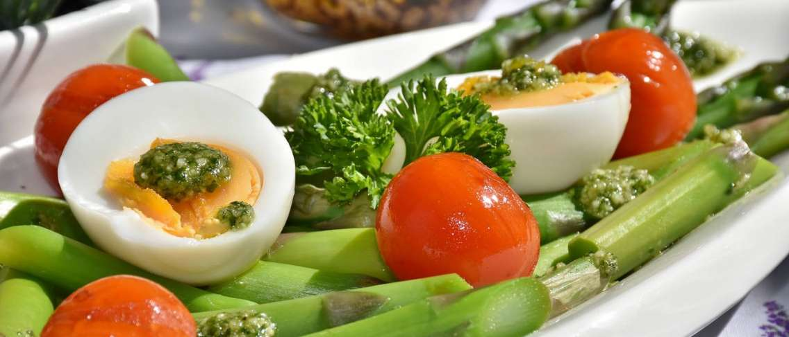
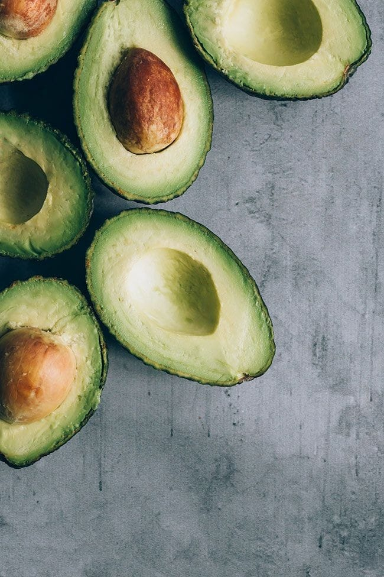

goSehat
Informasi seputar kesehatan jaman kini
Gaya Hidup Sehat
Mencegah Obesitas, Perhatikan Porsi dan Jenis Makanan
Diposting pada 11.04 WIB, 4 April 2022Punya anak dengan pipi dan badan gemuk memang terlihat menggemaskan. Tetapi, terlalu gemuk yang dimulai dari anak-anak bukanlah hal yang bagus.
Menurut Kemenkes, saat ini, 1 dari 3 orang dewasa dan 1 dari 5 anak usia 5-12 tahun di Indonesia mengalami kelebihan berat badan yang mengarah pada kegemukan bahkan obesitas. Obesitas bukan sekadar masalah penampilan lho! Ada bahaya serius di balik obesitas, salah satunya penyakit diabetes.
SelengkapnyaKulit & Kecantikan
Kulit Putih dan Sehat dengan Berbagai Makanan ini?
Diposting pada 11.14 WIB, 4 April 2022Untuk mendapatkan kulit sehat dan cerah bersinar, Anda perlu mengimbangi perawatan kulit sehari-hari dengan konsumsi makanan yang bisa memutihkan kulit. Sebab, dalam berbagai makanan untuk memutihkan kulit terdapat beragam nutrisi penting yang sayang dilewatkan.
Selain menggunakan sejumlah produk perawatan kulit tertentu, ada berbagai makanan yang membuat kulit putih sekaligus menjaganya tetap sehat. Dengan demikian, produk skincare yang digunakan pun dapat bekerja dengan lebih baik. Apa saja makanan untuk memutihkan kulit yang perlu Anda konsumsi? Yuk, simak ulasannya berikut ini.
SelengkapnyaMakanan Sehat
Manfaat Temulawak dan Kunyit Putih bagi Kesehatan
Diposting pada 11.24 WIB, 4 April 2022Temulawak dan kunyit putih telah lama digunakan sebagai obat tradisional yang digunakan untuk berbagai masalah kesehatan. Berbeda dengan kunyit biasa, kunyit atau kunir putih memiliki bentuk mirip dengan kunyit namun punya warna daging yang putih dan tekstur yang lebih lembut.
Ada banyak manfaat temulawak dan kunyit putih bagi kesehatan, yang bisa kamu peroleh baik dengan cara direbus ataupun dikonsumsi dalam bentuk suplemen. Apa saja manfaat temulawak dan kunyit putih bagi kesehatan? Yuk, simak selengkapnya di bawah ini!
Selengkapnya